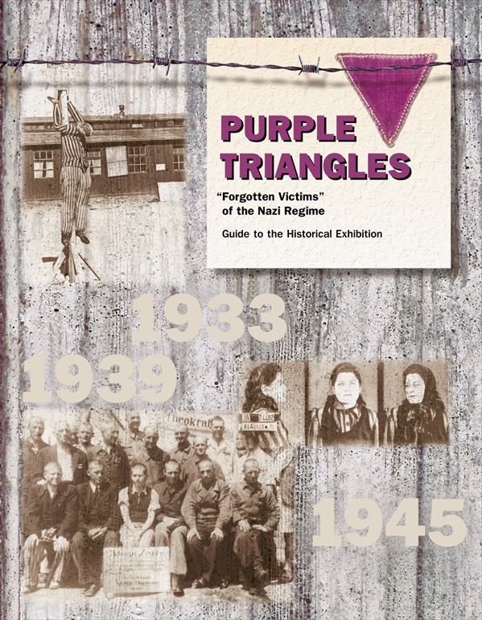

<div id="f1" class="north_center">
<figure>

</figure>
</div>
<header>
<h1 class="coverTtl" id="p1" data-pid="1"><span id="page1" class="pageNum" aria-hidden="true" data-no="1" data-before-text="1"></span><strong>PURPLE TRIANGLES​—“Forgotten Victims” of the Nazi Regime</strong></h1>
</header>
